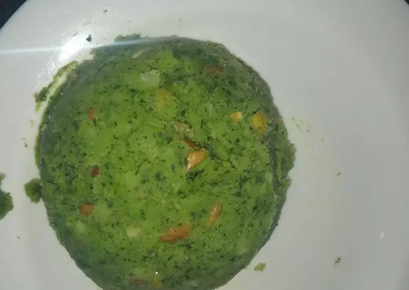

How to make Mukimo

Description
Mukimo is easily one of the sweetest and healthiest dishes you'll ever make.
Ingredients
- 2 cups soft maize
- 2 cups soft beans
- 1kg potatoes
- 10 pumpkin leaves
- 1 large onion
- 3 cloves of garlic
Steps
- Mix and soak two cups of soft maize and beans (preferably yellow beans) for ten hours
- Boil this mixture till cooked
- In a separate pot steam the potatoes and pumpkin leaves till soft and mashable
- Mix the two and mash the potatoes and leaves completely
- In a separate pot cook a large onion and garlic in three spoons of cooking oil till brown,
add the mukimo, salt to flavour, and stir for about three minutes
- Your mukimo is now ready to eat